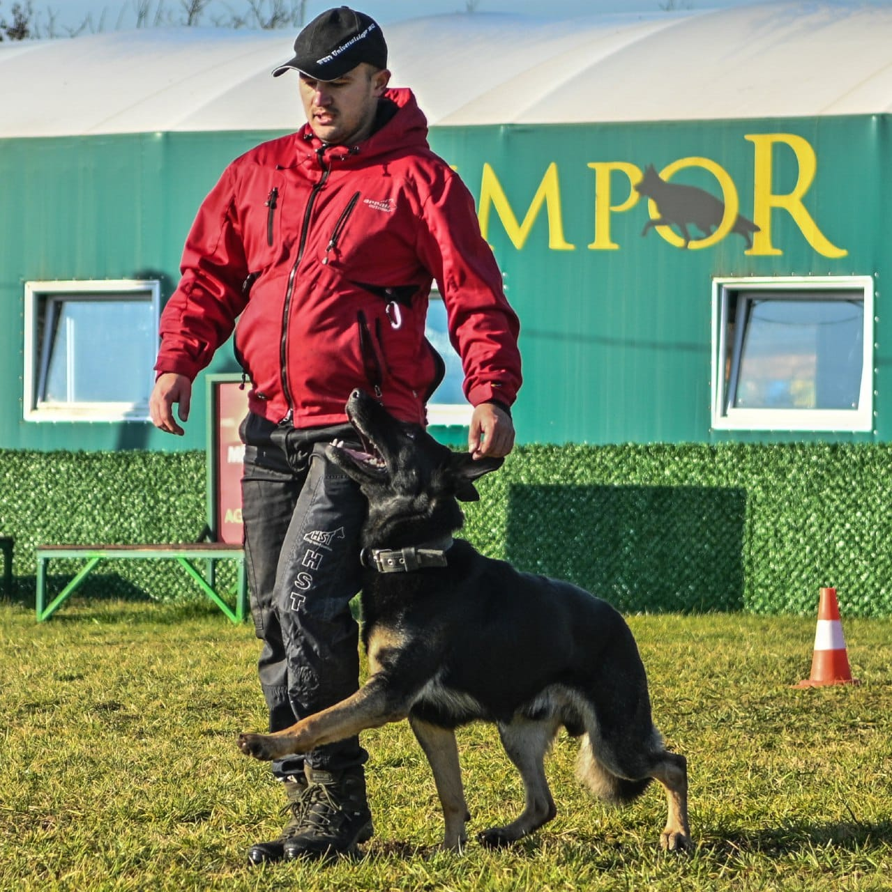

From personal protection and sport-level bite-work to civil K9 preparation and breeding licenses, the complete protection curriculum at Simpor Dog Center.
Protection training is not a single program, it is a family of disciplines that share a common foundation of stability, obedience, and control, but branch into very different real-world applications.
At Simpor, five distinct protection programs cover the full spectrum: personal protection for owner and family, controlled guarding of property, sport-regulated IGP protection, civil K9 work for professional environments, and preparation for KKL and ZTP breeding licenses. Each program is built on the same technical foundation, and each is delivered by certified professionals under direct supervision.


This personal protection program is intended for dogs trained to protect their owner and family in real-life situations. The training is based on control, stability, and proper evaluation of situations, with special emphasis on reliable performance without uncontrolled aggression. The goal: a dog that remains calm in everyday surroundings, yet responds decisively when necessary.

This training program is designed for the protection of property, buildings, and facilities. Dogs are trained for controlled territorial guarding, proper reaction to unauthorized entry, and reliable work in different conditions, including night work and work on larger areas. Special attention is given to character stability and obedience.

This sport protection program includes training in accordance with the rules of IGP 1–3. The training develops working drives, bite-work technique, control, speed, and precision. This type of protection work is the foundation of working dog sport and serves as the basis for further sport or professional programs, with a clear focus on correct structure and proper working technique.
The Civil K9 program is designed for dogs trained for professional protection and official duties in real-life conditions. The training combines obedience, protection work, and stability in urban environments. The program is adapted to the requirements of private security, as well as preparation for work within professional K9 systems, with a high level of control and reliability.

This program includes the preparation of dogs for KKL and ZTP breeding licenses for different working breeds. Training focuses on evaluating temperament, stability, working drives, and protection abilities in accordance with current regulations. The goal is the selection and preparation of high-quality dogs that meet the highest standards of breeding and working dog programs.

Every protection placement begins with understanding your goals and the dog's level. Contact us to discuss which program is right for you.
Enquire About Training